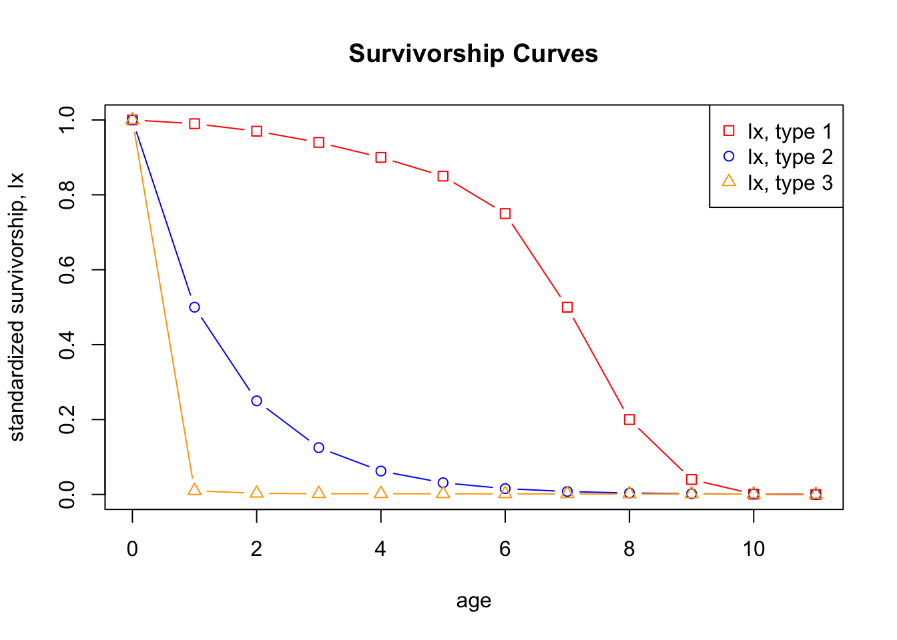
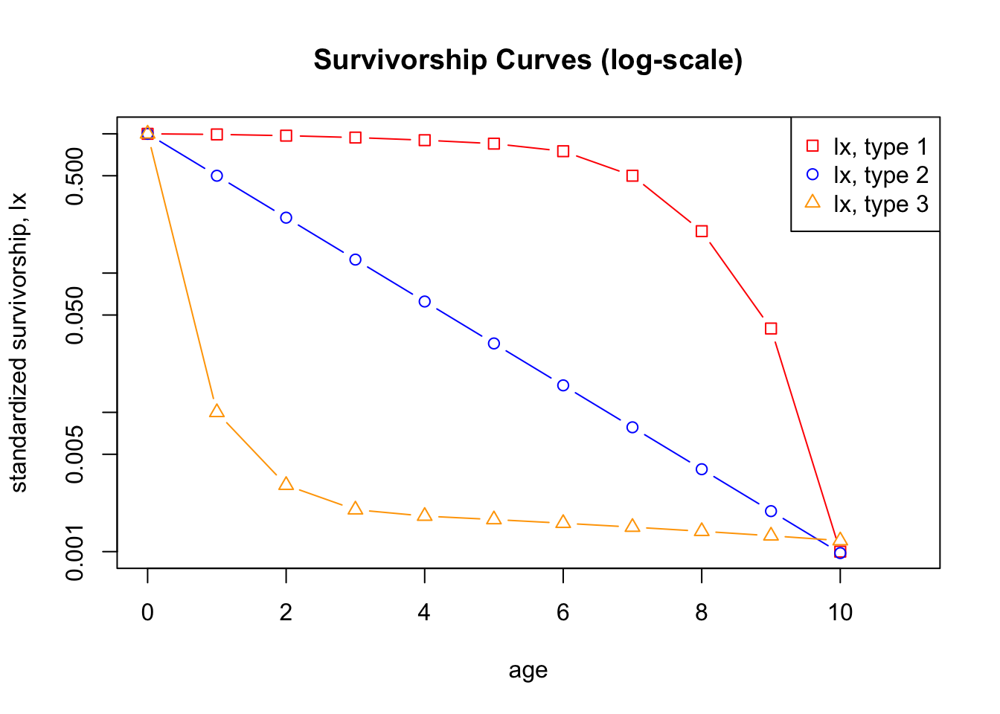
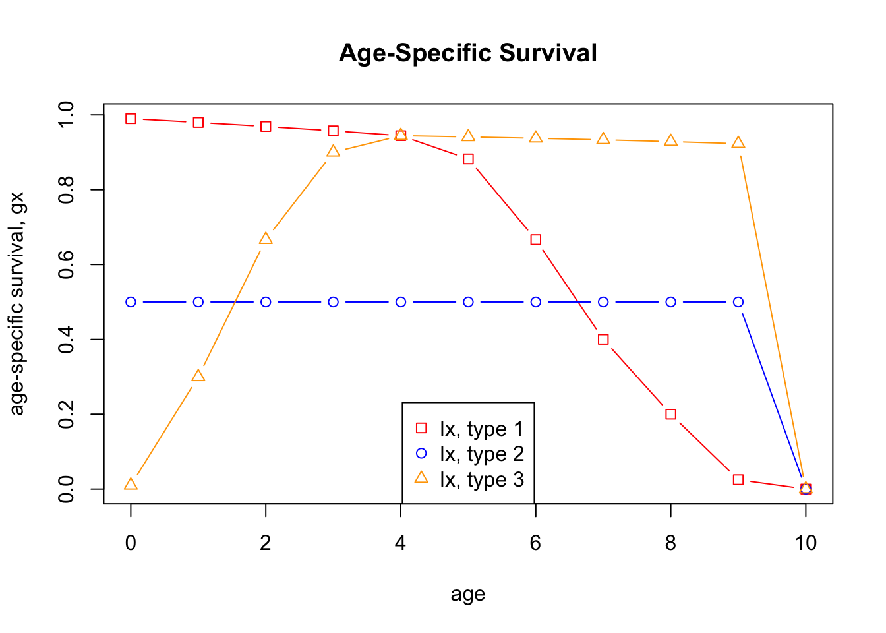
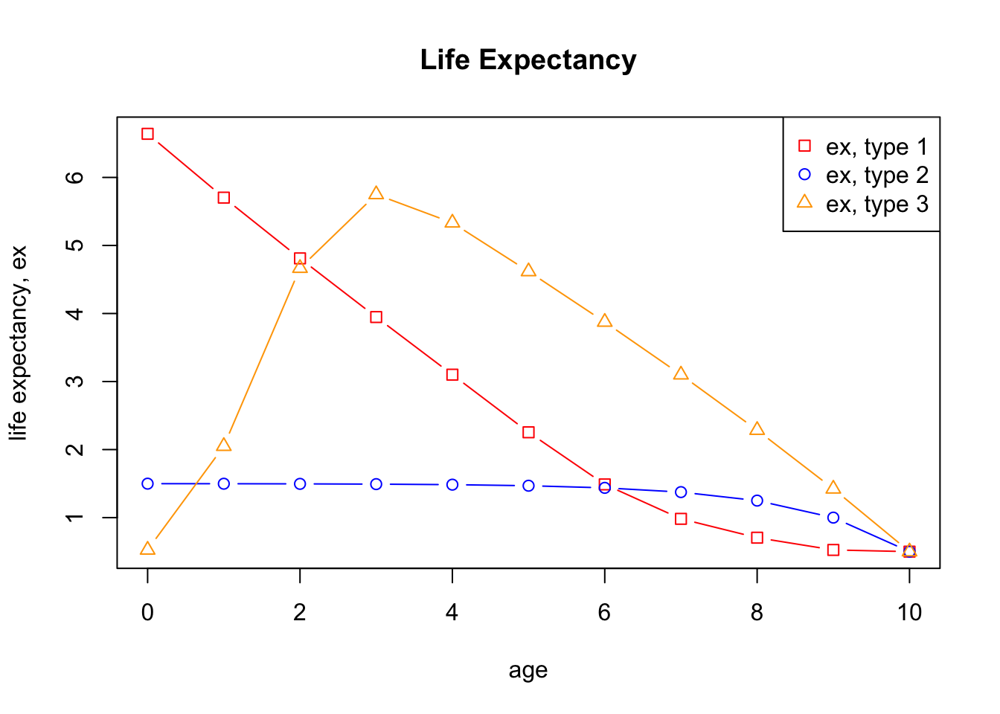
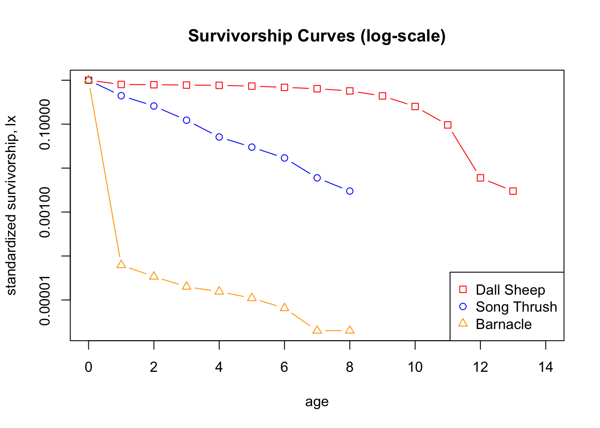

Note that this exercise consists of four tabs. Please work through the code in these tabs. Along the way, you are asked to answer five questions.
The material from this exercise is taken and modified from Spreadsheet Exercises in Ecology and Evolution by Therese M. Donovan and Charles W. Welden (Sinauer Associates 2002) and adapted for R. While doing this exercise, you will learn/refresh some R-coding related to vectors and data frames. But first a refresher of the theory.
A life table is a record of survival and reproductive rates in a population, broken out by age, size, or developmental stage (e.g., egg, hatchling, juvenile, adult). Ecologists and demographers (scientists who study human population dynamics) have found life tables useful in understanding patterns and causes of mortality, predicting the future growth or decline of populations, and managing populations of endangered species.
Predicting the growth and decline of human populations is one very important application of life tables. As you might expect, whether the population of a country or region increases or decreases depends in part on how many children each person has and the age at which people die. But it may surprise you to learn that population growth or decline also depends on the age at which they have their children. A major part of this exercise will explore the effects of changing patterns of survival and reproduction on population dynamics.
Life tables come in two varieties: cohort and static. A cohort life table follows the survival and reproduction of all members of a cohort from birth to death. A cohort is the set of all individuals born, hatched, or recruited into a population during a defined time interval. Cohorts are frequently defined on an annual basis (e.g., all individuals born in 1978), but other time intervals can be used as well.
A static life table records the number of living individuals of each age in a population and their reproductive output. The two varieties have distinct advantages and disadvantages, some of which we discuss below.
Life tables (whether cohort or static) that classify individuals by age are called age-based life tables. Such life tables treat age the same way we normally do: that is, individuals that have lived less than one full year are assigned age zero; those that have lived one year or more but less than two years are assigned age one; and so on. Life tables represent age by the letter \(x\), and use \(x\) as a subscript to refer to survivorship, fecundity, and so on, for each age.
Size-based and stage-based life tables classify individuals by size or developmental stage, rather than by age. Size-based and stage-based tables are often more useful or more practical for studying organisms that are difficult to classify by age, or whose ecological roles depend more on size or stage than on age. Such analyses are more complex, however, and we will consider them later.
To build a cohort life table for, let’s say, humans born in the United States during the year 1900, we would record how many individuals were born during the year 1900, and how many survived to the beginning of 1901, 1902, etc., until there were no more survivors. This record is called the survivorship schedule. Unfortunately, different textbooks use different notations for the number of survivors in each age; some write this as \(S_x\), some \(a_x\), and some \(n_x\). We will use \(a_x\) here.
We must also record the fecundity schedule - the number of offspring born to individuals of each age. The total number of offpsring is usually divided by the number of individuals in the age, giving the average number of offspring per individual, or per capita fecundity. Again, different texts use different notations for the fecundity schedule, including \(b_x\) or \(m_x\) (we will use \(m_x\)).
Many life tables count only females and their female offspring; for animals with two sexes and equal numbers of males and females of each age, the resulting numbers are the same as if males and females were both counted. For most plants, hermaphroditic animals, and many other organisms, distinctions between the sexes are nonexistent or more complex, and life table calculations may have to be adjusted.
A static life table is similar to a cohort life table but introduces a few complications. For many organisms, especially mobile animals with long life spans, it can be difficult or impossible to follow all the members of a cohort throughout their lives. In such cases, population biologists often count how many individuals of each age are alive at a given time. That is, they count how many members of the population are currently in the 0-1- year-old class, the 1-2-year-old class, etc., which obviously requires that we can measure the age of individuals (which is often difficult).
These counts can be used as if they were counts of survivors in a cohort, and all the calculations described below for a cohort life table can be performed using them. In doing this, however, the researcher must bear in mind that they assume that age-specific survivorship and fertility rates have remained constant since the oldest members of the population were born. This is usually not the case and can lead to some strange results, such as negative mortality rates. These are often resolved by averaging across several ages, or by making additional assumptions. We will avoid these complications by focusing this exercise on cohort life tables.
Survivorship and fecundity schedules are the raw data of any life table. From them we can calculate a variety of other quantities, including age-specific rates of survival, mortality, fecundity, survivorship curves, life expectancy, generation time, net reproductive rate, and intrinsic rate of increase. Which of these quantities you calculate will depend on your goals in constructing the life table. Rather than presenting all the quantities that may appear in a life table, we will present two applications of life tables, using the quantities needed in each case. First you will build life tables that illustrate the three classic survivorship curves. These curves are a powerful visual tool for understanding the patterns of survivorship and mortality in populations.Then you will use a life table to predict the future growth or decline of a population. This kind of analysis is frequently used in studies of human populations, in management of fish and game, and in attempts to rescue endangered species.
Ecology textbooks frequently present the three classic survivorship curves, called type I, type II, and type III (as shown on the lecture slides). To understand survivorship curves you can use survivorship schedules (\(a_x\)) to calculate and graph standardized survivorship (\(l_x\)), age-specific survivorship (\(g_x\)), and life expectancy (\(e_x\)).
Standardized Survival Schedule (\(l_x\)). Because we want to compare cohorts of different initial sizes, we standardize all cohorts to their initial size at time zero, \(a_0\). We do this by dividing each \(a_x\) by \(a_0\). This proportion of original numbers surviving to the beginning of each interval is denoted \(l_x\), and calculated as \[\begin{equation} \tag{1} l_x = \frac{a_x}{a_0}. \end{equation}\]
We can also think of \(l_x\) as the probability that an individual survives from birth to the beginning of age \(x\). Because we begin with all the individuals born during the year (or other interval), \(l_x\) always begins at a value of one (i.e., \(a_0/a_0\)), and can only decrease with time. At the last age, \(k\), \(a_k\) is zero.
Age-Specific Survivorship (\(g_x\)). Standardized survivorship, \(l_x\), gives us the probability of an individual surviving from birth to the beginning of age \(x\). But what if we want to know the probability that an individual who has already survived to age \(x\) will survive to age \(x + 1\)? We calculate this age-specific survivorship as \(g_x = l_{x+1}/l_x\), or, equivalently, \[\begin{equation} \tag{2} g_x = \frac{a_{x+1}}{a_x}. \end{equation}\]
Life Expectancy (\(e_x\)). You may have heard another demographic statistic, life expectancy, mentioned in discussions of human populations. Life expectancy is how much longer an individual of a given age can be expected to live beyond its present age. Life expectancy is calculated in three steps. First, we compute the proportion of survivors at the mid-point of each time interval (\(L_x\) - note the capital \(L\) here) by averaging \(l_x\) and \(l_{x+1}\); that is, \[\begin{equation} \tag{3} L_x = \frac{l_x + l_{x+1}}{2} \end{equation}\]
Second, we sum all the \(L\)-values from the age of interest (\(x\)) up to the oldest age, \(k\) (note that in the below formula I use the index \(i\) instead of \(x\) because \(x\) is not the age of interest): \[\begin{equation} \tag{4} T_x = \sum_{i=x}^k L_i. \end{equation}\]
Finally, we calculate life expectancy for an individual that has reached age \(x\) as (note the lowercase \(l_x\)) \[\begin{equation} \tag{5} e_x = \frac{T_x}{l_x}. \end{equation}\]
Life expectancy is age-specific – it is the expected number of time-intervals remaining to members of a given age. The statistic most often quoted (usually without qualification) is the life expectancy at birth (\(e_0\)). As you will see, the implications of \(e_0\) depend greatly on the survivorship schedule.
We frequently want to know whether a population can be expected to grow, shrink, or remain stable, given its current age-specific : the number of offspring a newborn individual can expect to have during its life time. To predict long-term changes in population size, we must use this net reproductive rate to estimate the intrinsic rate of increase (\(r\)).
Net Reproductive Rate (\(R_0\)). We calculate net reproductive rate (\(R_0\)) by multiplying the standardized survivorship of each age (\(l_x\)) by its fecundity (\(m_x\)), and summing these products: \[\begin{equation} \tag{6} R_0 = \sum_{x = 0}^k l_x m_x. \end{equation}\]
The net reproductive rate is the lifetime reproductive potential of the average female, adjusted for survival. Assuming survival and fertility schedules remain constant over time, if \(R_0 > 1\), then the population will grow exponentially. If \(R_0 < 1\), the population will shrink exponentially, and if \(R_0 = 1\), the population size will not change over time. You may be tempted to conclude the \(R_0 = r\), the intrinsic rate of increase of the exponential model. However, this is not quite correct, because \(r\) measures population change in absolute units of time (e.g., years) whereas \(R_0\) measures population change in terms of generation time. To convert \(R_0\) into \(r\), we must first calculate generation time (\(G\)), and then adjust \(R_0\).
Generation Time. Generation time, more specifically, the cohort generation time \(T_c\) is defined as the average length of time between the birth of an individual and the birth of one of its own offspring, and is calculated as \[\begin{equation} \tag{7} T_c = \frac{\sum_{x = 0}^k l_x m_x x}{\sum_{x = 0}^k l_x m_x}. \end{equation}\] Here, the numerators is the sum of the ages at which a member of the cohort obtains an offspring and the denominator is simply \(R_0\).
For organisms that live only one year, the numerator and denominator will be equal, and generation time will equal one year. For all longer-lived organisms, generation time will be greater than one year, but exactly how much greater will depend on the survival and fertility schedules. A long-lived species that reproduces at an early age may have a shorter generation time than a shorter-lived one that delays reproduction.
Intrinsic Rate of Increase. We can use our knowledge of exponential population growth and our value of \(R_0\) to estimate the intrinsic rate of increase (\(r\)). Recall from the lecture that the size of an exponentially growing population at some arbitrary time \(t\) is \(N(t) = N_0 \exp(rt)\). If we consider the growth of such a population from time zero through one generation time, G, it is \[\begin{equation} \tag{8} N_G = N_0\exp(rT_c) \end{equation}\] Dividing both sides by \(N_0\) gives us \[\begin{equation} \tag{9} \frac{N_G}{N_0} = \exp(rT_c). \end{equation}\] We can think of \(N_G / N_0\) as roughly equivalent to \(R_0\); both are estimates of the rate of population growth over the period of one generation.
Substituting \(R_0\) into the equation gives us \(R_0 \approx \exp(rT_c)\). Taking the natural logarithm of both sides gives us \(\ln (R_0) \approx r T_c\) and dividing through by \(T_c\) gives us an estimate of \(r\): \[\begin{equation} \tag{10} r \approx \frac{\ln(R_0)}{T_c}. \end{equation}\] Note, that \(r\) is positive if and only if \(R_0\) is larger than one: the population growth rate is positive if and only if each female can expect to give birth to more than one daughter during its life time.
Finally, we can use our estimate of \(r\) to predict the size of the population in the future (using \(N(t) = N_0 \exp(rt)\)). In this exercise, you will adjust survivorship and fecundity schedules and observe the effects on population growth or decline. This kind of analysis is done for human populations to predict the effects of changes in medical care and birth control programs. If we assume that all age groups are roughly equivalent in size, a similar analysis can be done for endangered species to determine what intervention may be most effective in promoting population growth. The same analysis can be applied to pest species to determine what intervention may be most effective in reducing population size.
Our purpose here is to show how survivorship curves are generated and what they mean. You will use survivorship schedules to calculate and graph \(l_x\), \(g_x\), and \(e_x\), resulting in survivorship curves of type I, II, or III.
We start by creating a data frame data frame with the survivorship schedule for three hypothetical species that reach an age of up to 11 years. A data frame is R’s equivalent to an EXCEL spreadsheet. It consists of columns and rows, where objects of the same type are stored in columns and where these columns have names.
Here are the data for the three species, each collected in a vector.
axSpecies1 <- c(1000, 990, 970, 940, 900, 850, 750, 500, 200, 40, 1, 0)
axSpecies2 <- c(2048, 1024, 512, 256, 128, 64, 32, 16, 8, 4, 2, 0)
axSpecies3 <- c(10000, 100, 30, 20, 18, 17, 16, 15, 14, 13, 12, 0)Next, let us collect these vectors in a data frame, called Counts, and let us add a first column to it, called age:
Counts <- data.frame(age=0:11, axSpecies1, axSpecies2, axSpecies3)This is how this data frame looks:
Counts## age axSpecies1 axSpecies2 axSpecies3
## 1 0 1000 2048 10000
## 2 1 990 1024 100
## 3 2 970 512 30
## 4 3 940 256 20
## 5 4 900 128 18
## 6 5 850 64 17
## 7 6 750 32 16
## 8 7 500 16 15
## 9 8 200 8 14
## 10 9 40 4 13
## 11 10 1 2 12
## 12 11 0 0 0This data frame contains the original counts from a cohort life table. Next, let us calculate \(l_x\), the proportion of individuals present in the original cohort surviving to the start of each age class, by dividing each count by the first count. In R, this can simply be done by dividing the vector of counts, by the first entry in the respective vector, which produced a new vector.
lxSpecies1 <- axSpecies1/axSpecies1[1]
lxSpecies2 <- axSpecies2/axSpecies2[1]
lxSpecies3 <- axSpecies3/axSpecies3[1]Let us again collect these in a data frame, called Relative.Counts.
Relative.Counts <- data.frame(age=0:11, lxSpecies1, lxSpecies2, lxSpecies3)
Relative.Counts## age lxSpecies1 lxSpecies2 lxSpecies3
## 1 0 1.000 1.0000000000 1.0000
## 2 1 0.990 0.5000000000 0.0100
## 3 2 0.970 0.2500000000 0.0030
## 4 3 0.940 0.1250000000 0.0020
## 5 4 0.900 0.0625000000 0.0018
## 6 5 0.850 0.0312500000 0.0017
## 7 6 0.750 0.0156250000 0.0016
## 8 7 0.500 0.0078125000 0.0015
## 9 8 0.200 0.0039062500 0.0014
## 10 9 0.040 0.0019531250 0.0013
## 11 10 0.001 0.0009765625 0.0012
## 12 11 0.000 0.0000000000 0.0000Now we everything to plot the survivorship curves for our three hypothetical species. Note that I here use base R for plotting. One way to plot several curves in the same graph is by “putting them on top of each other”. This means that we first create a plot with the first curve, to which we can add a name for the figure (Survivorship Curves) and axes labels. Then, using the command lines, we can add the curves for species two and three. For each line, we can specify the the color (col) and the symbol (pch). Finally, we can add a legend to the figure.
plot(Relative.Counts$age, Relative.Counts$lxSpecies1, type = "b", pch = 0, col="red", xlab = "age", ylab = "standardized survivorship, lx", main="Survivorship Curves")
lines(Relative.Counts$age, Relative.Counts$lxSpecies2, type = "b", pch = 1, col="blue")
lines(Relative.Counts$age, Relative.Counts$lxSpecies3, type = "b", pch = 2, col="orange")
legend("topright", c("lx, type 1", "lx, type 2", "lx, type 3"), col =c("red", "blue", "orange"), pch = c(0, 1, 2)) # adds a plot legend
It is now very easy to plot the survivorship curves with \(l_x\)-values on a log-scale. This is indeed the standard way to plot survivorship curves. All that we have to do is to add the command (log="y") to the plot command.
plot(Relative.Counts$age, Relative.Counts$lxSpecies1, log="y", type = "b", pch = 0, col="red", xlab = "age", ylab = "standardized survivorship, lx", main="Survivorship Curves (log-scale)")
lines(Relative.Counts$age, Relative.Counts$lxSpecies2, type = "b", pch = 1, col="blue")
lines(Relative.Counts$age, Relative.Counts$lxSpecies3, type = "b", pch = 2, col="orange")
legend("topright", c("lx, type 1", "lx, type 2", "lx, type 3"), col =c("red", "blue", "orange"), pch = c(0, 1, 2)) # adds a plot legend
Doing this will produce an error message. The reason is that in each column the last value for \(l_x\) equals zero and that \(\ln(0)=-\infty\), which R does not know how to plot. It therefore omits the value for \(x=11\) from the plot.
Question 1 Why do we plot survivorship curves on a semi-log scale (y-axis on a log-scale)?
Question 2 What do the shapes of the survivorship curves tell us about patterns of survival and mortality? Compare each curve to the corresponding graph of age-specific survivorship (which you produce with the next piece of code).
Next, we calculate \(g_x\), the age-specific survivorship, or, in other words, the probability to survive to age \(x+1\) for an individual that has survived to age \(x\) (see Eq. 2).
gxSpecies1 <- lxSpecies1[-1]/lxSpecies1[-length(lxSpecies1)]
gxSpecies2 <- lxSpecies2[-1]/lxSpecies2[-length(lxSpecies2)]
gxSpecies3 <- lxSpecies3[-1]/lxSpecies3[-length(lxSpecies3)]
Survivorship <- data.frame(age=0:10, gxSpecies1, gxSpecies2, gxSpecies3)
Survivorship## age gxSpecies1 gxSpecies2 gxSpecies3
## 1 0 0.9900000 0.5 0.0100000
## 2 1 0.9797980 0.5 0.3000000
## 3 2 0.9690722 0.5 0.6666667
## 4 3 0.9574468 0.5 0.9000000
## 5 4 0.9444444 0.5 0.9444444
## 6 5 0.8823529 0.5 0.9411765
## 7 6 0.6666667 0.5 0.9375000
## 8 7 0.4000000 0.5 0.9333333
## 9 8 0.2000000 0.5 0.9285714
## 10 9 0.0250000 0.5 0.9230769
## 11 10 0.0000000 0.0 0.0000000Let us plot age-specific survival for each species.
plot(Survivorship$age, Survivorship$gxSpecies1, type = "b", pch = 0, col="red", xlab = "age", ylab = "age-specific survival, gx", main="Age-Specific Survival")
lines(Survivorship$age, Survivorship$gxSpecies2, type = "b", pch = 1, col="blue")
lines(Survivorship$age, Survivorship$gxSpecies3, type = "b", pch = 2, col="orange")
legend("bottom", c("lx, type 1", "lx, type 2", "lx, type 3"), col =c("red", "blue", "orange"), pch = c(0, 1, 2)) # adds a plot legend
Next in line is to calculate \(e_x\), the age-specific life expectancy, or, in other words, the life expectancy for an individual that has reached age \(x\) (see Eq. 5) Thus, we first have to calculate \(L_x\), the relative number of survivors at a the midpoint between two age classes (Eq. 3). We can do this in one step by adding the vector lxSpecies1 with the last entry removed (lxSpecies1[-length(lxSpecies1)) to lxSpecies1 but with with the first entry removed (xSpecies1[-1]), and then divide by 2 (and in the same manner for species 2 and 3). Convince yourself that this procedure indeed gives the desired result.
averagelxSpecies1 <- (lxSpecies1[-length(lxSpecies1)] + lxSpecies1[-1]) / 2
averagelxSpecies2 <- (lxSpecies2[-length(lxSpecies2)] + lxSpecies2[-1]) / 2
averagelxSpecies3 <- (lxSpecies3[-length(lxSpecies3)] + lxSpecies3[-1]) / 2
averagelx <- data.frame(age=0:10, Lx1=averagelxSpecies1, Lx2=averagelxSpecies2, Lx3=averagelxSpecies3)
averagelx## age Lx1 Lx2 Lx3
## 1 0 0.9950 0.7500000000 0.50500
## 2 1 0.9800 0.3750000000 0.00650
## 3 2 0.9550 0.1875000000 0.00250
## 4 3 0.9200 0.0937500000 0.00190
## 5 4 0.8750 0.0468750000 0.00175
## 6 5 0.8000 0.0234375000 0.00165
## 7 6 0.6250 0.0117187500 0.00155
## 8 7 0.3500 0.0058593750 0.00145
## 9 8 0.1200 0.0029296875 0.00135
## 10 9 0.0205 0.0014648438 0.00125
## 11 10 0.0005 0.0004882812 0.00060To calculate the \(e_x\), we use some R-magic, namely, we define a function in R, called ex, that performs the calculation of Eq. 5 and Eq. 6 in one step:
ex <- function(x, averagelx, lx) {
sum(averagelx[x:11]) / lx[x]
}This function has three arguments: (i) the age class \(x\), (ii) the vector containing all values \(L_x\), and (iii) the vector containing all values \(l_x\). In this function, the expression sum(averagelx[x:11]) calculates \(T_x\) as given by Eq. 4, which is then divided by the correct value for \(l_x\). Since we want \(e_x\) for all age classes \(x\), we put this function in a for loop (if you take the course Population and Community Ecology in the next study period you will learn in more detail about for-loops).
e1 <- c() # creates an empty vector for storing the values ex
for (i in 0:11) {
e1[i] <- ex(i, averagelxSpecies1, lxSpecies1)
}This code produces a vector with all values \(a_x\) for species 1. In order to calculate the corresponding vector for species 2 and 3, you have to replace in this code e1 with e2 and e3, respectively, and change Species1 to Species2 and Species3, respectively.
Once you did these calculations (and stored the results for species 2 and 3 in vectors called e2 and e3) you should obtain the following data frame:
lifeexp <- data.frame(age=0:10, e1, e2, e3)
lifeexp## age e1 e2 e3
## 1 0 6.641000 1.499023 0.525500
## 2 1 5.703030 1.498047 2.050000
## 3 2 4.810309 1.496094 4.666667
## 4 3 3.947872 1.492188 5.750000
## 5 4 3.101111 1.484375 5.333333
## 6 5 2.254118 1.468750 4.617647
## 7 6 1.488000 1.437500 3.875000
## 8 7 0.982000 1.375000 3.100000
## 9 8 0.705000 1.250000 2.285714
## 10 9 0.525000 1.000000 1.423077
## 11 10 0.500000 0.500000 0.500000and a plot as this:
plot(lifeexp$age, lifeexp$e1, type = "b", pch = 0, col="red", xlab = "age", ylab = "life expectancy, ex", main="Life Expectancy")
lines(0:10, lifeexp$e2, type = "b", pch = 1, col="blue")
lines(0:10, lifeexp$e3, type = "b", pch = 2, col="orange")
legend("topright", c("ex, type 1", "ex, type 2", "ex, type 3"), col =c("red", "blue", "orange"), pch = c(0, 1, 2)) # adds a plot legend
Suvival is just one part of a life table. The other is fecundity at age \(x\), \(m_x\). For the purpose of this exercise, let us assume that all three species have the same fecundity schedule as collected the following vector m:
m <- c(0,0,0,0,3,3,3,3,3,3,3,1)This will allow us to investigate the effect of the different survival curves on population growth.
Let us now collect the survival and fecundity in a single data frame. You here see the code for species 1. Adapt this code to obtain the corresponding life table for species 2 and 3.
species1 <- data.frame(age=0:11, ax=axSpecies1, lx=lxSpecies1, mx=m)
species1## age ax lx mx
## 1 0 1000 1.000 0
## 2 1 990 0.990 0
## 3 2 970 0.970 0
## 4 3 940 0.940 0
## 5 4 900 0.900 3
## 6 5 850 0.850 3
## 7 6 750 0.750 3
## 8 7 500 0.500 3
## 9 8 200 0.200 3
## 10 9 40 0.040 3
## 11 10 1 0.001 3
## 12 11 0 0.000 1Note that we added a fecundity schedule. Let us now calculate the expected life time number of offspring, \(R_0\) (see Eq. 6). To do this, let us add a column with the product of \(l_x\) and \(m_x\).
species1$lxmx <- species1$lx*species1$mx
species1## age ax lx mx lxmx
## 1 0 1000 1.000 0 0.000
## 2 1 990 0.990 0 0.000
## 3 2 970 0.970 0 0.000
## 4 3 940 0.940 0 0.000
## 5 4 900 0.900 3 2.700
## 6 5 850 0.850 3 2.550
## 7 6 750 0.750 3 2.250
## 8 7 500 0.500 3 1.500
## 9 8 200 0.200 3 0.600
## 10 9 40 0.040 3 0.120
## 11 10 1 0.001 3 0.003
## 12 11 0 0.000 1 0.000In order to calculate \(R_0\), we simply have to sum all entries in this last column. Here the result for species 1.
R0.1 <- sum(species1$lxmx)
R0.1## [1] 9.723Finally, to estimate the intrinsic growth rate we have to calculate the cohort generation time \(T_c\). Let us first add one more column to the data frame, namely one with the product \(x*l_x*m_x\).
species1$xlxmx <- species1$age*species1$lx*species1$mx
species1## age ax lx mx lxmx xlxmx
## 1 0 1000 1.000 0 0.000 0.00
## 2 1 990 0.990 0 0.000 0.00
## 3 2 970 0.970 0 0.000 0.00
## 4 3 940 0.940 0 0.000 0.00
## 5 4 900 0.900 3 2.700 10.80
## 6 5 850 0.850 3 2.550 12.75
## 7 6 750 0.750 3 2.250 13.50
## 8 7 500 0.500 3 1.500 10.50
## 9 8 200 0.200 3 0.600 4.80
## 10 9 40 0.040 3 0.120 1.08
## 11 10 1 0.001 3 0.003 0.03
## 12 11 0 0.000 1 0.000 0.00Using Eq. 7, we obtain, for species 1,
Tc1 <- sum(species1$xlxmx) / sum(species1$lxmx)
Tc1## [1] 5.498303and then, using Eq. 10, an estimate for the intrinsic growth rate,
r1 <- log(R0.1) / Tc1
r1## [1] 0.413672Repeat the same procedure for species 2 and 3.
You should obtain the following results, for all three species collected in a single data frame:
data.frame(species=c(1 ,2, 3), R0=c(R0.1, R0.2, R0.3), Tc=c(Tc1, Tc2, Tc3), r=c(r1, r2, r3), lamdda=exp(c(r1, r2, r3)))## species R0 Tc r lamdda
## 1 1 9.7230000 5.498303 0.4136720 1.5123611
## 2 2 0.3720703 4.944882 -0.1999385 0.8187811
## 3 3 0.0315000 6.733333 -0.5135299 0.5983796sum(species2$lxmx)## [1] 0.3720703sum(species2$xlxmx)## [1] 1.839844sum(species2$xlxmx)/sum(species2$lxmx)## [1] 4.944882sum(species3$lxmx)## [1] 0.0315sum(species3$xlxmx)## [1] 0.2121sum(species3$xlxmx)/sum(species3$lxmx)## [1] 6.733333In this part of the exercise, we will compare the survivorship curves for three species, a mammal, a bird, and a Crustacean. The data on which these curves are based are real data collected in the wild.
The first table shows the survivorship schedule for the Dall Mountain Sheep (Ovis dalli dalli). Data are taken from Deevey (1947, Life tables for natural populations of animals, The Quarterly Review of Biology 22:283-314).
## age ax lx
## 1 0 1000 1.000
## 2 1 801 0.801
## 3 2 789 0.789
## 4 3 776 0.776
## 5 4 764 0.764
## 6 5 734 0.734
## 7 6 688 0.688
## 8 7 640 0.640
## 9 8 571 0.571
## 10 9 439 0.439
## 11 10 252 0.252
## 12 11 96 0.096
## 13 12 6 0.006
## 14 13 3 0.003
## 15 14 0 0.000The second table shows the survivorship schedule for the Song Thrush (Turdus philomelos). Data are from Deevey (1947, Life tables for natural populations of animals, The Quarterly Review of Biology 22:283-314).
## age ax lx
## 1 0 1000 1.000
## 2 1 444 0.444
## 3 2 259 0.259
## 4 3 123 0.123
## 5 4 51 0.051
## 6 5 30 0.030
## 7 6 17 0.017
## 8 7 6 0.006
## 9 8 3 0.003
## 10 9 0 0.000The third table shows the survivorship schedule for the barnacle Balanus glandula. Data are from Connell (1970, A predator-prey system in the marine intertidal region. I. Balanus glandula, Ecological Monographs 40:49-78).
## age ax lx
## 1 0 1000000.0 1.0000000
## 2 1 62.0 0.0000620
## 3 2 34.0 0.0000340
## 4 3 20.0 0.0000200
## 5 4 15.5 0.0000155
## 6 5 11.0 0.0000110
## 7 6 6.5 0.0000065
## 8 7 2.0 0.0000020
## 9 8 2.0 0.0000020
## 10 9 0.0 0.0000000ylim=c(2.00e-06, 1) to the plot command. This option sets explicitly the range of the y-axis. Without this command, the curve for the barnacles will be cut off.